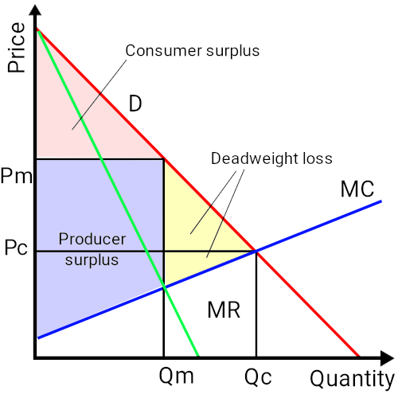
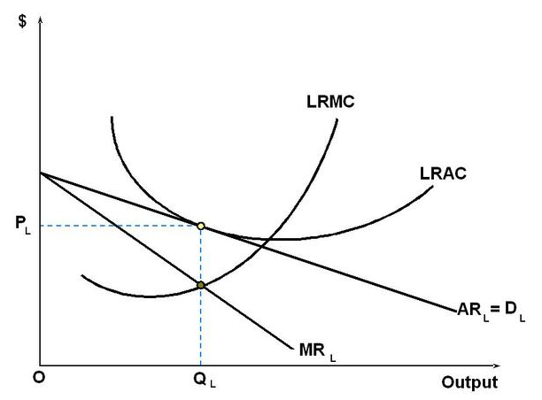
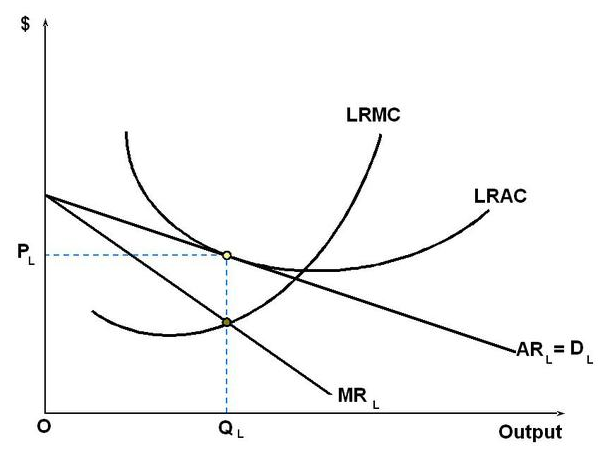
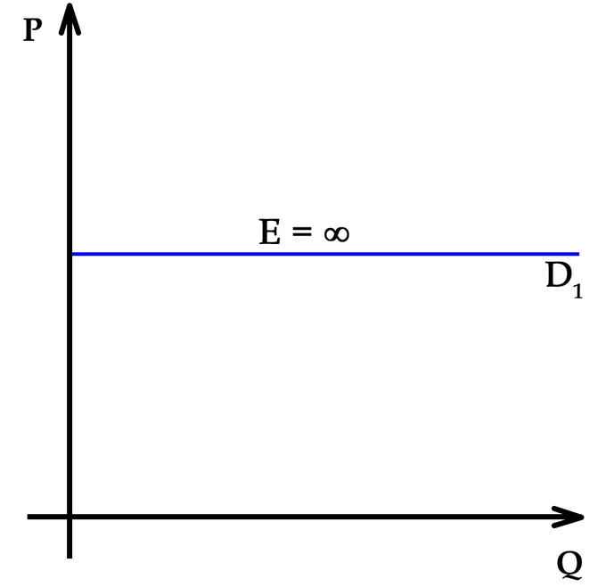

Table of Contents
12. Monopolistic Competition
12.1. Monopolistic Competition
12.1.1. Defining Monopolistic Competition
12.1.2. Product Differentiation
12.1.3. Demand Curve
12.1.4. Short Run Outcome of Monopolistic Competition
12.1.5. Long Run Outcome of Monopolistic Competition
12.1.6. Monopolistic Competition Compared to Perfect Competition
12.1.7. Efficiency of Monopolistic Competition
12.1.8. Advertising and Brand Management in Monopolistic Competition
12. Monopolistic Competition
12.1. Monopolistic Competition
12.1.1. Defining Monopolistic Competition
Monopolistic competition is a type of imperfect competition such that many producers sell products that are differentiated from one another.
Learning Objective
Evaluate the characteristics and outcomes of markets with imperfect competition
Key Points
- Monopolistic competition is different from a monopoly. A monopoly exists when a person or entity is the exclusive supplier of a good or service in a market.
- Markets that have monopolistic competition are inefficient for two reasons. First, at its optimum output the firm charges a price that exceeds marginal costs. The second source of inefficiency is the fact that these firms operate with excess capacity.
- Monopolistic competitive markets have highly differentiated products; have many firms providing the good or service; firms can freely enter and exits in the long-run; firms can make decisions independently; there is some degree of market power; and buyers and sellers have imperfect information.
Key Terms
- monopoly
- A market where one company is the sole supplier.
- Monopolistic competition
- A type of imperfect competition such that one or two producers sell products that are differentiated from one another as goods but not perfect substitutes (such as from branding, quality, or location).
Monopolistic Competition
Monopolistic competition is a type of imperfect competition such that many producers sell products that are differentiated from one another as goods but not perfect substitutes (such as from branding, quality, or location). In monopolistic competition, a firm takes the prices charged by its rivals as given and ignores the impact of its own prices on the prices of other firms.
Unlike in perfect competition, firms that are monopolistically competitive maintain spare capacity. Models of monopolistic competition are often used to model industries. Textbook examples of industries with market structures similar to monopolistic competition include restaurants, cereal, clothing, shoes, and service industries in large cities .
The clothing industry is monopolistically competitive because firms have differentiated products and market power.
Monopolistic competition is different from a monopoly. A monopoly exists when a person or entity is the exclusive supplier of a good or service in a market. The demand is inelastic and the market is inefficient.
Monopolistic competitive markets:
- have products that are highly differentiated, meaning that there is a perception that the goods are different for reasons other than price;
- have many firms providing the good or service;
- firms can freely enter and exits in the long-run;
- firms can make decisions independently;
- there is some degree of market power, meaning producers have some control over price; and
- buyers and sellers have imperfect information.
Sources of Market Inefficiency
Markets that have monopolistic competition are inefficient for two reasons. The first source of inefficiency is due to the fact that at its optimum output, the firm charges a price that exceeds marginal costs. The monopolistic competitive firm maximizes profits where marginal revenue equals marginal cost. A monopolistic competitive firm's demand curve is downward sloping, which means it will charge a price that exceeds marginal costs. The market power possessed by a monopolistic competitive firm means that at its profit maximizing level of production there will be a net loss of consumer and producer surplus.
The second source of inefficiency is the fact that these firms operate with excess capacity. The firm's profit maximizing output is less than the output associated with minimum average cost. All firms, regardless of the type of market it operates in, will produce to a point where demand or price equals average cost. In a perfectly competitive market, this occurs where the perfectly elastic demand curve equals minimum average cost. In a monopolistic competitive market, the demand curve is downward sloping. In the long run, this leads to excess capacity.
12.1.2. Product Differentiation
Product differentiation is the process of distinguishing a product or service from others to make it more attractive to a target market.
Learning Objective
Define product differentiation
Key Points
- Differentiation occurs because buyers perceive a difference between products. Causes of differentiation include functional aspects of the product or service, how it is distributed and marketed, and who buys it.
- Differentiation affects performance primarily by reducing direct competition. As the product becomes more different, categorization becomes more difficult, and the product draws fewer comparisons with its competition.
- There are three types of product differentiation: simple, horizontal, and vertical.
Key Term
- product differentiation
- Perceived differences between the product of one firm and that of its rivals so that some customers value it more.
One of the defining traits of a monopolistically competitive market is that there is a significant amount of non-price competition. This means that product differentiation is key for any monopolistically competitive firm. Product differentiation is the process of distinguishing a product or service from others to make it more attractive to a target market .
Although research in a niche market may result in changing a product in order to improve differentiation, the changes themselves are not differentiation. Marketing or product differentiation is the process of describing the differences between products or services, or the resulting list of differences; differentiation is not the process of creating the differences between the products. Product differentiation is done in order to demonstrate the unique aspects of a firm's product and to create a sense of value.
In economics, successful product differentiation is inconsistent with the conditions of perfect competition, which require products of competing firms to be perfect substitutes.
Consumers do not need to know everything about the product for differentiation to work. So long as the consumers perceive that there is a difference in the products, they do not need to know how or why one product might be of higher quality than another. For example, a generic brand of cereal might be exactly the same as a brand name in terms of quality. However, consumers might be willing to pay more for the brand name despite the fact that they cannot identify why the more expensive cereal is of higher "quality. "
There are three types of product differentiation:
- Simple: the products are differentiated based on a variety of characteristics;
- Horizontal: the products are differentiated based on a single characteristic, but consumers are not clear on which product is of higher quality; and
- Vertical: the products are differentiated based on a single characteristic and consumers are clear on which product is of higher quality.
Differentiation occurs because buyers perceive a difference. Drivers of differentiation include functional aspects of the product or service, how it is distributed and marketed, and who buys it. The major sources of product differentiation are as follows:
- Differences in quality, which are usually accompanied by differences in price;
- Differences in functional features or design;
- Ignorance of buyers regarding the essential characteristics and qualities of goods they are purchasing;
- Sales promotion activities of sellers, particularly advertising; and
- Differences in availability (e.g. timing and location).
The objective of differentiation is to develop a position that potential customers see as unique. Differentiation affects performance primarily by reducing direct competition. As the product becomes more different, categorization becomes more difficult, and the product draws fewer comparisons with its competition. A successful product differentiation strategy will move the product from competing on price to competing on non-price factors.
12.1.3. Demand Curve
The demand curve in a monopolistic competitive market slopes downward, which has several important implications for firms in this market.
Learning Objective
Explain how the shape of the demand curve affects the firms that exist in a market with monopolistic competition
Key Points
- The downward slope of a monopolistically competitive demand curve signifies that the firms in this industry have market power.
- Market power allows firms to increase their prices without losing all of their customers.
- The downward slope of the demand curve contributes to the inefficiency of the market, leading to a loss in consumer surplus, deadweight loss, and excess production capacity.
Key Terms
- market power
- The ability of a firm to profitably raise the market price of a good or service over marginal cost. A firm with total market power can raise prices without losing any customers to competitors.
- elastic
- Sensitive to changes in price.
The demand curve of a monopolistic competitive market slopes downward. This means that as price decreases, the quantity demanded for that good increases. While this appears to be relatively straightforward, the shape of the demand curve has several important implications for firms in a monopolistic competitive market.
{kind=link}
As you can see from this chart, the demand curve (marked in red) slopes downward, signifying elastic demand.
Market Power
The demand curve for an individual firm is downward sloping in monopolistic competition, in contrast to perfect competition where the firm's individual demand curve is perfectly elastic. This is due to the fact that firms have market power: they can raise prices without losing all of their customers. In this type of market, these firms have a limited ability to dictate the price of its products; a firm is a price setter not a price taker (at least to some degree). The source of the market power is that there are comparatively fewer competitors than in a competitive market, so businesses focus on product differentiation, or differences unrelated to price. By differentiating its products, firms in a monopolistically competitive market ensure that its products are imperfect substitutes for each other. As a result, a business that works on its branding can increase its prices without risking its consumer base.
Inefficiency in the Market
Monopolistically competitive firms maximize their profit when they produce at a level where its marginal costs equals its marginal revenues. Because the individual firm's demand curve is downward sloping, reflecting market power, the price these firms will charge will exceed their marginal costs. Due to how products are priced in this market, consumer surplus decreases below the pareto optimal levels you would find in a perfectly competitive market, at least in the short run. As a result, the market will suffer deadweight loss. The suppliers in this market will also have excess production capacity.
12.1.4. Short Run Outcome of Monopolistic Competition
Monopolistic competitive markets can lead to significant profits in the short-run, but are inefficient.
Learning Objective
Examine the concept of the short run and how it applies to firms in a monopolistic competition
Key Points
- The "short run" is the time period when one factor of production is fixed in terms of costs, while the other elements of production are variable.
- Like monopolies, the suppliers in monopolistic competitive markets are price makers and will behave similarly in the short-run.
- Also like a monopoly, a monopolastic competitive firm will maximize its profits when its marginal revenues equals its marginal costs.
Key Term
- short-run
- The conceptual time period in which at least one factor of production is fixed in amount and others are variable in amount.
In terms of production and supply, the "short run" is the time period when one factor of production is fixed in terms of costs while the other elements of production are variable. The most common example of this is the production of a good that requires a factory. If demand spikes, in the short run you will only be able to produce the amount of good that the capacity of the factory allows. This is because it takes a significant amount of time to either build or acquire a new factory. If demand for the good plummets you can cut production in the factory, but will still have to pay the costs of maintaining the factory and the associated rent or debt associated with acquiring the factory. You could sell the factory, but again that would take a significant amount of time. The "short run" is defined by how long it would take to alter that "fixed" aspect of production.
In the short run, a monopolistically competitive market is inefficient. It does not achieve allocative nor productive efficiency. Also, since a monopolistic competitive firm has powers over the market that are similar to a monopoly, its profit maximizing level of production will result in a net loss of consumer and producer surplus, creating deadweight loss.
Setting a Price and Determining Profit
Like monopolies, the suppliers in monopolistic competitive markets are price makers and will behave similarly in the short-run. Also like a monopoly, a monopolistic competitive firm will maximize its profits by producing goods to the point where its marginal revenues equals its marginal costs. The profit maximizing price of the good will be determined based on where the profit-maximizing quantity amount falls on the average revenue curve. The profit the firm makes is the the amount of the good produced multiplied by the difference between the price minus the average cost of producing the good. .
{kind=link}
As you can see from the chart, the firm will produce the quantity (Qs) where the marginal cost (MC) curve intersects with the marginal revenue (MR) curve. The price is set based on where the Qs falls on the average revenue (AR) curve. The profit the firm makes in the short term is represented by the grey rectangle, or the quantity produced multiplied by the difference between the price and the average cost of producing the good.
Since monopolistically competitive firms have market power, they will produce less and charge more than a firm would under perfect competition. This causes deadweight loss for society, but, from the producer's point of view, is desirable because it allows them to earn a profit and increase their producer surplus.
Because of the possibility of large profits in the short-run and relatively low barriers of entry in comparison to perfect markets, markets with monopolistic competition are very attractive to future entrants.
12.1.5. Long Run Outcome of Monopolistic Competition
In the long run, firms in monopolistic competitive markets are highly inefficient and can only break even.
Learning Objective
Explain the concept of the long run and how it applies to a firms in monopolistic competition
Key Points
- In terms of production and supply, the "long-run" is the time period when all aspects of production are variable and can therefore be adjusted to meet shifts in demand.
- Like monopolies, the suppliers in monopolistic competitive markets are price makers and will behave similarly in the long-run.
- Like a monopoly, a monopolastic competitive firm will maximize its profits by producing goods to the point where its marginal revenues equals its marginal costs.
- In the long-run, the demand curve of a firm in a monopolistic competitive market will shift so that it is tangent to the firm's average total cost curve. As a result, this will make it impossible for the firm to make economic profit; it will only be able to break even.
Key Term
- long-run
- The conceptual time period in which there are no fixed factors of production.
In terms of production and supply, the "long-run" is the time period when there is no factor that is fixed and all aspects of production are variable and can therefore be adjusted to meet shifts in demand. Given a long enough time period, a firm can take the following actions in response to shifts in demand:
- Enter an industry;
- Exit an industry;
- Increase its capacity to produce more; and
- Decrease its capacity to produce less.
In the long-run, a monopolistically competitive market is inefficient. It achieves neither allocative nor productive efficiency. Also, since a monopolistic competitive firm has power over the market that is similar to a monopoly, its profit maximizing level of production will result in a net loss of consumer and producer surplus.
Setting a Price and Determining Profit
Like monopolies, the suppliers in monopolistic competitive markets are price makers and will behave similarly in the long-run. Also like a monopoly, a monopolistic competitive firm will maximize its profits by producing goods to the point where its marginal revenues equals its marginal costs. The profit maximizing price of the good will be determined based on where the profit-maximizing quantity amount falls on the average revenue curve.
While a monopolistic competitive firm can make a profit in the short-run, the effect of its monopoly-like pricing will cause a decrease in demand in the long-run. This increases the need for firms to differentiate their products, leading to an increase in average total cost. The decrease in demand and increase in cost causes the long run average cost curve to become tangent to the demand curve at the good's profit maximizing price. This means two things. First, that the firms in a monopolistic competitive market will produce a surplus in the long run. Second, the firm will only be able to break even in the long-run; it will not be able to earn an economic profit .
{kind=link}
In the long run, a firm in a monopolistic competitive market will product the amount of goods where the long run marginal cost (LRMC) curve intersects marginal revenue (MR). The price will be set where the quantity produced falls on the average revenue (AR) curve. The result is that in the long-term the firm will break even.
12.1.6. Monopolistic Competition Compared to Perfect Competition
The key difference between perfectly competitive markets and monopolistically competitive ones is efficiency.
Learning Objective
Differentiate between monopolistic competition and perfect competition
Key Points
- Perfectly competitive markets have no barriers of entry or exit. Monopolistically competitive markets have a few barriers of entry and exit.
- The two markets are similar in terms of elasticity of demand, a firm's ability to make profits in the long-run, and how to determine a firm's profit maximizing quantity condition.
- In a perfectly competitive market, all goods are substitutes. In a monopolistically competitive market, there is a high degree of product differentiation.
Key Term
- perfect competition
- A type of market with many consumers and producers, all of whom are price takers
Examples
- The classic example of a monopoly is De Beers, who at one point in the 1980s reputably owned 90% of all the diamond supply to major markets. This results in a high degree of price control, as a lack of competitive forces will enable De Beers to essentially set the going price for diamonds (granted the control their distribution).
- A good example of monopolistic competition, on the other hand, would be the Some modern day apps in the app store (this is NOT to say the app stores themselves, which are something of an oligopoly). There are thousands upon thousands of apps, some are free, some are paid, and some have free versions with microtransactions. The key is that demand is highly elastic, and supply is nearly infinite, allowing consumers a great deal of freedom in their purchasing decisions.
Perfect competition and monopolistic competition are two types of economic markets.
Similarities
One of the key similarities that perfectly competitive and monopolistically competitive markets share is elasticity of demand in the long-run. In both circumstances, the consumers are sensitive to price; if price goes up, demand for that product decreases. The two only differ in degree. Firm's individual demand curves in perfectly competitive markets are perfectly elastic, which means that an incremental increase in price will cause demand for a product to vanish ). Demand curves in monopolistic competition are not perfectly elastic: due to the market power that firms have, they are able to raise prices without losing all of their customers.
{kind=link}
This is the demand curve in a perfectly competitive market. Note how any increase in price would wipe out demand.
Also, in both sets of circumstances the suppliers cannot make a profit in the long-run. Ultimately, firms in both markets will only be able to break even by selling their goods and services.
Both markets are composed of firms seeking to maximize their profits. In both of these markets, profit maximization occurs when a firm produces goods to such a level so that its marginal costs of production equals its marginal revenues.
Differences
One key difference between these two set of economic circumstances is efficiency. A perfectly competitive market is perfectly efficient. This means that the price is Pareto optimal, which means that any shift in the price would benefit one party at the expense of the other. The overall economic surplus, which is the sum of the producer and consumer surpluses, is maximized. The suppliers cannot influence the price of the good or service in question; the market dictates the price. The price of the good or service in a perfectly competitive market is equal to the marginal costs of manufacturing that good or service.
In a monopolistically competitive market the price is higher than the marginal cost of producing the good or service and the suppliers can influence the price, granting them market power. This decreases the consumer surplus, and by extension the market's economic surplus, and creates deadweight loss.
Another key difference between the two is product differentiation. In a perfectly competitive market products are perfect substitutes for each other. But in monopolistically competitive markets the products are highly differentiated. In fact, firms work hard to emphasize the non-price related differences between their products and their competitors'.
A final difference involves barriers to entry and exit. Perfectly competitive markets have no barriers to entry and exit; a firm can freely enter or leave an industry based on its perception of the market's profitability. In a monopolistic competitive market there are few barriers to entry and exit, but still more than in a perfectly competitive market.
12.1.7. Efficiency of Monopolistic Competition
Monopolistic competitive markets are never efficient in any economic sense of the term.
Learning Objective
Discuss the effect monopolistic competition has on overall market efficiency
Key Points
- Because a good is always priced higher than its marginal cost, a monopolistically competitive market can never achieve productive or allocative efficiency.
- Suppliers in monopolistically competitive firms will produce below their capacity.
- Because monopolistic firms set prices higher than marginal costs, consumer surplus is significantly less than it would be in a perfectly competitive market. This leads to deadweight loss and an overall decrease in economic surplus.
Key Terms
- producer surplus
- The amount that producers benefit by selling at a market price that is higher than the lowest price at which they would be willing to sell.
- consumer surplus
- The difference between the maximum price a consumer is willing to pay and the actual price they do pay.
Monopolistically competitive markets are less efficient than perfectly competitive markets.
Producer and Consumer Surplus
In terms of economic efficiency, firms that are in monopolistically competitive markets behave similarly as monopolistic firms. Both types of firms' profit maximizing production levels occur when their marginal revenues equals their marginal costs. This quantity is less than what would be produced in a perfectly competitive market. It also means that producers will supply goods below their manufacturing capacity.
Firms in a monopolistically competitive market are price setters, meaning they get to unilaterally charge whatever they want for their goods without being influenced by market forces. In these types of markets, the price that will maximize their profit is set where the profit maximizing production level falls on the demand curve.This price exceeds the firm's marginal costs and is higher than what the firm would charge if the market was perfectly competitive. This means two things:
- Consumers will have to pay a higher price than they would in a perfectly competitive market, leading to a significant decline in consumer surplus; and
- Producers will sell less of their goods than they would have in a perfectly competitive market, which could offset their gains from charging a higher price and could result in a decline in producer surplus.
Regardless of whether there is a decline in producer surplus, the loss in consumer surplus due to monopolistic competition guarantees deadweight loss and an overall loss in economic surplus .

Monopolistic competition creates deadweight loss and inefficiency, as represented by the yellow triangle. The quantity is produced when marginal revenue equals marginal cost, or where the green and blue lines intersect. The price is determined based on where the quantity falls on the demand curve, or the red line. In the short run, the monopolistic competition market acts like a monopoly.
Productive and Allocative Efficiency
Productive efficiency occurs when a market is using all of its resources efficiently. This occurs when a product's price is set at its marginal cost, which also equals the product's average total cost. In a monopolistic competitive market, firms always set the price greater than their marginal costs, which means the market can never be productively efficient.
Allocative efficiency occurs when a good is produced at a level that maximizes social welfare. This occurs when a product's price equals its marginal benefits, which is also equal to the product's marginal costs. Again, since a good's price in a monopolistic competitive market always exceeds its marginal cost, the market can never be allocatively efficient.
12.1.8. Advertising and Brand Management in Monopolistic Competition
Advertising and branding help firms in monopolistic competitive markets differentiate their products from those of their competitors.
Learning Objective
Evaluate whether advertising is beneficial or detrimental to consumers
Key Points
- A company's brand can help promote quality in that company's products.
- Advertising helps inform consumers about products, which decreases selection costs.
- Costs associated with advertising and branding include higher prices, customers mislead by false advertisements, and negative societal affects such as perpetuating stereotypes and spam.
Key Terms
- brand
- The reputation of an organization, a product, or a person among some segment of the population.
- advertising
- Communication with the purpose of influencing potential customers about products and services
One of the characteristics of a monopolistic competitive market is that each firm must differentiate its products. Two ways to do this is through advertising and cultivating a brand. Advertising is a form of communication meant to inform, educate, and influence potential customers about products and services. Advertising is generally used by businesses to cultivate a brand . A brand is a company's reputation in relation to products or services sold under a specific name or logo.
From 1921 until the mid-1970s, Listerine was also marketed as preventive and a remedy for colds and sore throats. In 1976, the Federal Trade Commission ruled that these claims were misleading, and that Listerine had "no efficacy" at either preventing or alleviating the symptoms of sore throats and colds. Warner-Lambert was ordered to stop making the claims and to include in the next \$10.2 million dollars of Listerine ads specific mention that "contrary to prior advertising, Listerine will not help prevent colds or sore throats or lessen their severity. "
Benefits of Advertising and Branding
The purpose of the brand is to generate an immediate positive reaction from consumers when they see a product or service being sold under a certain name in order to increase sales. A brand and the associated reputation are built on advertising and consumers' past experiences with the products associated with that brand.
Reputation among consumers is important to a monopolistically competitive firm because it is arguably the best way to differentiate itself from its competitors. However, for that reputation to be maintained, the firm must ensure that the products associated with the brand name are of the highest quality. This standard of quality must be maintained at all times because it only takes one bad experience to ruin the value of the brand for a segment of consumers. Brands and advertising can thus help guarantee quality products for consumers and society at large.
Advertising is also valuable to society because it helps inform consumers. Markets work best when consumers are well informed, and advertising provides that information. Advertising and brands can help minimize the costs of choosing between different products because of consumers' familiarity with the firms and their quality.
Finally, advertising allows new firms to enter into a market. Consumers might be hesitant to purchase products with which they are unfamiliar. Advertising can educate and inform those consumers, making them comfortable enough to give those products a try.
Costs of Advertising and Branding
There are some concerns about how advertising can harm consumers and society as well. Some believe that advertising and branding induces customers to spend more on products because of the name associated with them rather than because of rational factors. Further, there is no guarantee that advertisements accurately describe products; they can mislead consumers. Finally, advertising can have negative societal effects such as the perpetuation of negative stereotypes or the nuisance of "spam. "